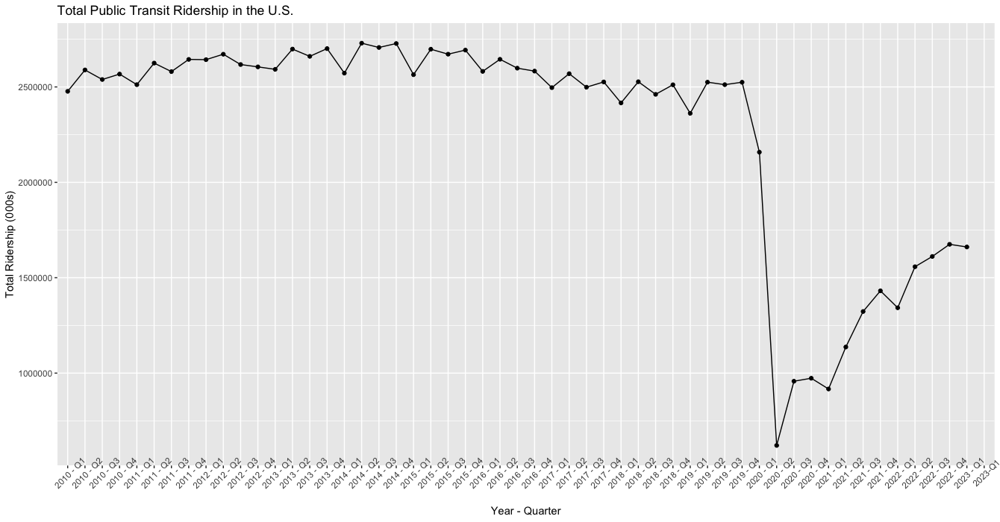
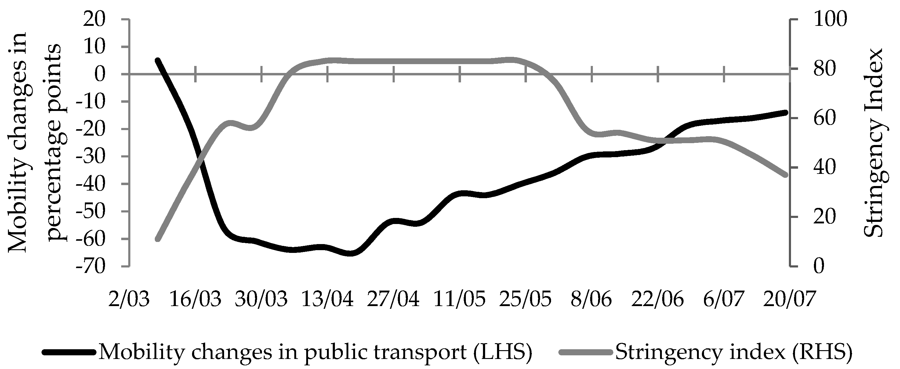

Introduction
Exploring the Efficacy of Public Transit Systems in the Wake of COVID-19
Abstract
Large public transit networks have been a staple of large cities for over a century. However, in large part due to the ramifications of COVID-19, urban areas across the United States of America have seen significant drops in public transit usage. The graph below uses data from the American Public Transportation Association Quarterly Ridership Report1 to show this unprecedented drop and subsequent partial recovery. This will serve as a generalization and basis for the issue which this paper explores.

While the plot above shows that this phenomenon has slightly abated as cities have returned to a resemblance of their previous state, usage numbers still significantly lag behind those from before the pandemic. As large portions of state and municipal budgets go to the creation, improvement, and operation of public transit systems, many have started to question the efficacy of urban bus and train networks in the new post-COVID-19 era.
The potential consequences of this decline in usage are easy to see. Many believe this calls for decreased funding or elimination of unprofitable public transit, as money should be allocated towards areas where more people will benefit. On the other hand, the presence of affordable and reliable transportation is often seen as a public service, where monetary loss can be accepted for the good of a city and its residents. Ultimately, the extent to which this belief outweighs current and future struggles can be debated indefinitely. Thus, it is important for us to understand the causes of the recent decline and current recovery, what we can expect from public transit usage in the future, and how public transit impacts the city and its residents. The goal of this paper is to explore these topics and respond to the hypothesis that public transit systems still have efficacy because they remain vital staples of their city with great enough long-term demand to offset temporary financial losses.
10 Questions to Answer
- To what extent does the public service of public transit offset financial losses?
- What are the primary reason for people to use public transit?
- What were the primary causes for the rapid decline in public transit usage?
- What are the primary causes for the slow recovery in public transit usage?
- To what extent is the decline in public transit usage permanent?
- How does in public transit usage differ between cities?
- How does public transit usage differ between modes of transportation?
- What political incentives exist regarding funding, eliminating, or expanding public transit?
- To what extent do residents typically benefit from increased spending on public transit?
- Who is most affected by changes in public transit ridership and policy?
Relevant Publications
To properly answer the questions above, it is important to understand work done by other researchers. Initially, there are two academic publications that provide significant insight into public transit phenomena in 2020. Understanding the events and results of the decline in public transit usage will ultimately inform our understanding of how current events shape public behavior, the role of public transit in urban areas, and the extent to which we can predict a rebound in public transit usage.
Decline in Mobility: Public Transport in Poland in the time of the COVID-19 Pandemic 2
This publication from September 2020 provides significant insight into what can be observed by studying mobility during the COVID-19 pandemic. Despite a specific focus on Poland, we are able to see how human behavior can be measured and how public transit systems are affected by current events. The paper notes that in addition to studying the affect of a pandemic on public transit, the opposite relationship can occur, where public transportation methods can negatively impact the mitigation of a pandemic. Ultimately, the paper aims to assess the relationships between public transit usage and COVID-19 cases, as well as the former with government stringency.
In its methodology, the researchers developed quantifiable metrics to determine government stringency (called Stringency Index) at various times by logging different events of lockdowns, restrictions, and warnings. This, along with already quantified data regarding the status of the pandemic across Poland, was measured alongside mobility metrics such as public transit usage. In the image below, we can see how a relationship was determined through the variables that had been set:

Ultimately, researchers concluded through analysis of all regions of Poland that despite a relatively mild outbreak of the pandemic, “a combination of government lockdown and social fears of contracting and spreading COVID-19 has caused a substantial reduction in passengers’ public transport demand in Poland.” Meanwhile, a similar relationship between the status of the pandemic (i.e., total cases) and public transit usage. This offers compelling insight for our topic, as it enforces the need to compare different forces in why people may hesitate to use public transit. Additionally, the importance of political decisions are heavily weighed, which turned out to be a telling factor in determining human behavior.
The Impacts of COVID-19 Pandemic on Public Transit Demand in the United States 3
Much like the previous article, this publication studied a decline in public transit ridership prior to any eventual rebound. Its data sources are primarily from a widely used transit application to measure changes in demand over time. To accomplish this, the researchers define three key parameters: “base value, the apparent minimal level of demand; cliff and base point, representing the initial date when decline in transit demand began and the final date when decline attenuated, respectively; and decay rate, representing the speed of the demand decline.” Using these metrics, they managed to determine that the impact of COVID-19 on public transit was uneven, often explained by differences in social status.
By studying several cities across the United States, this study identified demographic influences in how public transit ridership was affected by COVID-19. Communities with larger minority populations often saw higher base values and less significant declines in ridership, a relationship that was also present for populations that searched for “Coronavirus” less. These communities also correlated heavily with the proportion of essential workers. Ultimately, this indicates that demand for public transit is discretionary. People continue to use public transportation if their occupations and livelihood still necessitate its use.
This relates to our questions for the future because it indicates factors that impact people’s public transit usage, many of which are still changing today. In a world where “work-from-home” remains more prevalent than prior to the pandemic, it stands to reason that usage may not fully rebound until people feel it is necessary, not just convenient or inexpensive. Additionally, this publication highlights public transit as a critical infrastructure for underprivileged social groups, which is a necessary consideration when assessing its efficacy.
Footnotes
“Quarterly and Annual Totals by Mode,” American Public Transportation Association, https://www.apta.com/research-technical-resources/transit-statistics/ridership-report/ (accessed Oct. 5, 2023).↩︎
M. Wielechowski, K. Czech, and Ł. Grzęda, “Decline in mobility: Public transport in Poland in the time of the COVID-19 pandemic,” Economies, vol. 8, no. 4, p. 78, 2020. doi:10.3390/economies8040078↩︎
L. Liu, H. J. Miller, and J. Scheff, “The impacts of covid-19 pandemic on public transit demand in the United States,” PLOS ONE, vol. 15, no. 11, 2020. doi:10.1371/journal.pone.0242476↩︎